White Cheese Chicken Lasagna
Chicken lasagna with spinach and a creamy white cheese sauce. Great for any kind of potluck. My kids love it!
This white chicken lasagna recipe is a satisfying and crowd-pleasing twist on a classic Italian favorite.
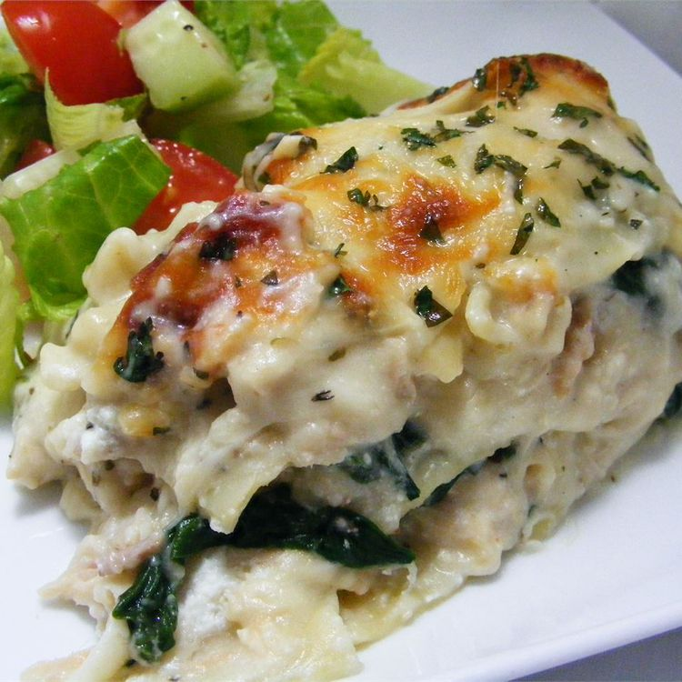
Chicken Lasagna Ingredients
- Noodles: Of course, you'll need lasagna noodles.
- Butter: Cook the onion and garlic in butter.
- Vegetables: You'll need an onion and two packages of frozen spinach.
- Garlic: Cook a clove of minced garlic with the onion for a more intense flavor.
- Flour: All-purpose flour thickens the sauce.
- Broth: Use store-bought chicken broth or make your own at home.
- Milk: Whole milk is best for this decadent white sauce.
- Seasonings and herbs: This chicken lasagna is seasoned with salt, dried basil, dried oregano, black pepper, and fresh parsley.
- Cheeses: You'll need mozzarella, Parmesan, and ricotta cheeses.
- Chicken: This white chicken lasagna is a great use for leftover chicken!
Directions
- Gather all ingredients and preheat the oven to 350 degrees F (175 degrees C).
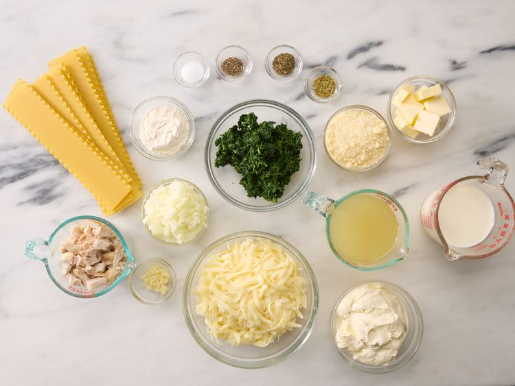
- Bring a large pot of lightly salted water to a boil. Add lasagna noodles and cook for 8 to 10 minutes or until al dente; drain and rinse with cold water.
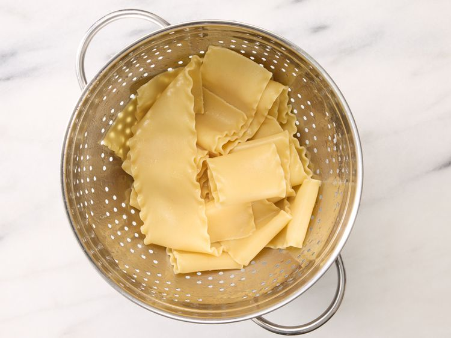
- Meanwhile, melt butter in a large saucepan over medium heat; stir in onion and garlic. Whisk in flour until lightly browned and onion is tender, about 2 minutes. Add chicken broth, milk, and salt; cook, whisking continuously, for 1 minute.
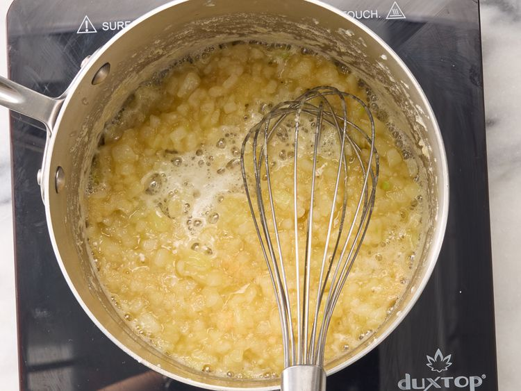
- Stir in 2 cups mozzarella and 1/4 cup Parmesan until well combined. Season with basil, oregano, and black pepper; remove from heat and set aside.
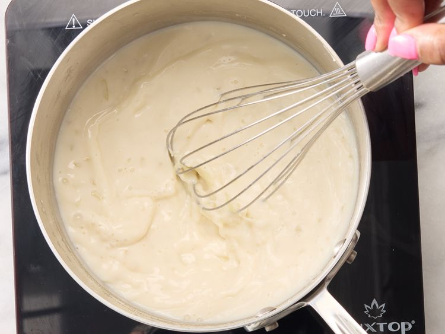
- Spread 1/3 of the sauce mixture in the bottom of a 9x13-inch baking dish.
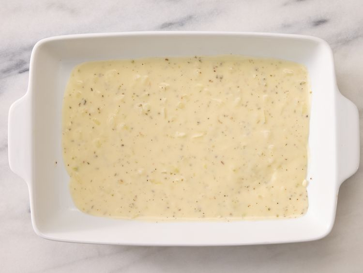
- Layer with 3 lasagna noodles, ricotta, and chicken.
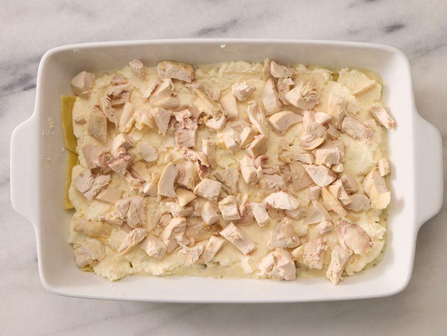
- Arrange 3 lasagna noodles over the chicken and layer with 1/3 of the sauce mixture, spinach, remaining 2 cups mozzarella, and 1/2 cup Parmesan.
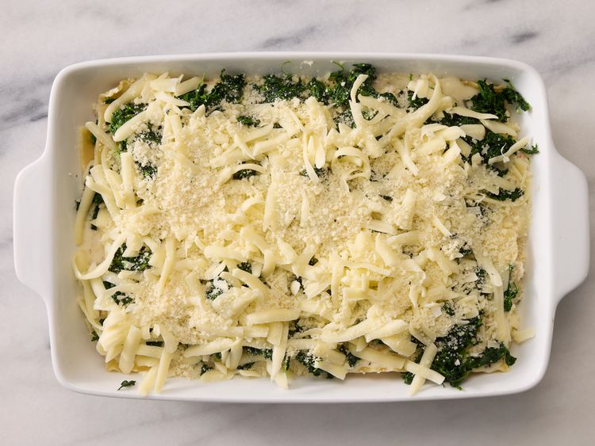
- Arrange remaining noodles over cheese and spread remaining sauce evenly over noodles. Sprinkle with parsley and remaining 1/4 cup Parmesan.
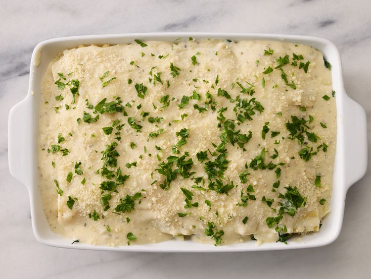
- Bake in the preheated oven for 35 to 40 minutes.
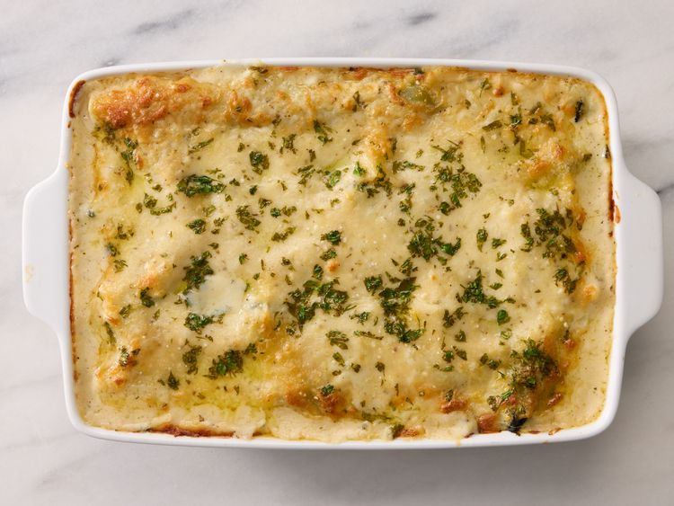
- Serve and enjoy!
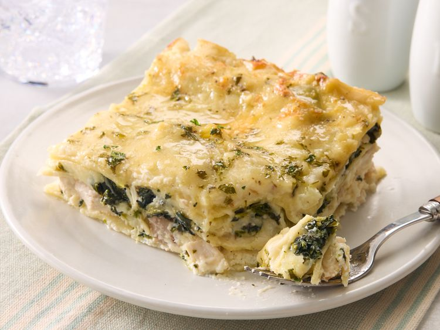